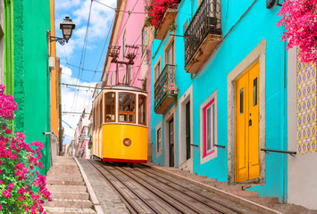
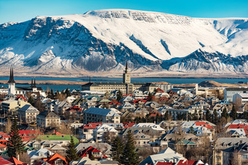
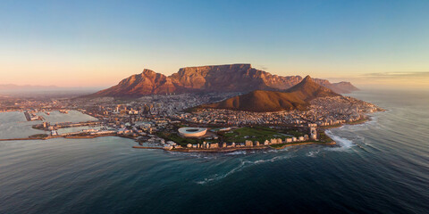

THE SLOW CITY BREAKPORTUGAL
Lisbon
Golden light. Winding streets.
FOR THE WANDERERS & THE WONDERERS
Big adventures. Small escapes. Your next favourite place could be closer than you think.
A whole world of possibilities. One place to begin.
 TAKE THE SCENIC ROUTE
TAKE THE SCENIC ROUTEWHERE WILL YOU GO NEXT?
Roam brings together your destination ideas, live forecasts and travel money in one simple place. Pick a city to start your next chapter.
THE POSTCARD COLLECTION

THE SLOW CITY BREAKGolden light. Winding streets.
Little lanes. Lasting impressions.

WILD AT HEARTFresh air. A different perspective.

WHERE WORLDS MEETMountain mornings. Ocean evenings.
HOW IT WORKS
Discover new cities and explore the weather before you go.
Explore cities ↗ 02 / KEEP IT CLOSEKeep your favourite places together in a personal shortlist.
My shortlist ↗ 03 / PLAN AHEADGet an estimate of what your travel money is worth.
Convert currency ↗YOUR NEXT STORY STARTS HERE
You bring the curiosity. We’ll give you somewhere to start.
Find your next destination ↗